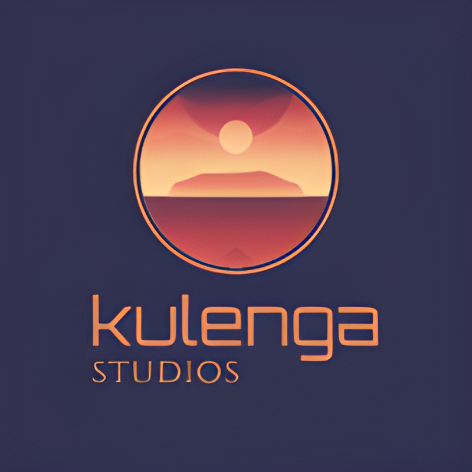

CONTACTO
Hola!
Puedes encontrarnos en estas Redes Sociales, agradecemos tu apoyo.


ESTUDIO

Kulenga Studios es un grupo de estudiantes de videojuegos de la UCM.
Está formado por:
·Francisco Miguel Galván
·Sheila Julvez
·Cristina Mora
·Jose Moreno
Creadores de juegos como NEON RISING
CONTROLES
En este juego controlarás a Wenge, una chica Malawi que debe esquivar coches
Para moverla deberás usar los botones A y D para moverla lateralmente
-> A para moverla hacia la derecha
-> D para moverla hacia la izquierda
También podrás usar el ratón para:
-> Comprar elementos y mejoras en la tienda
-> Continuar con el diálogo
En cierto momento del juego podrás comprar un dash, para usarlo:
-> Q para la derecha
-> E para la izquierda